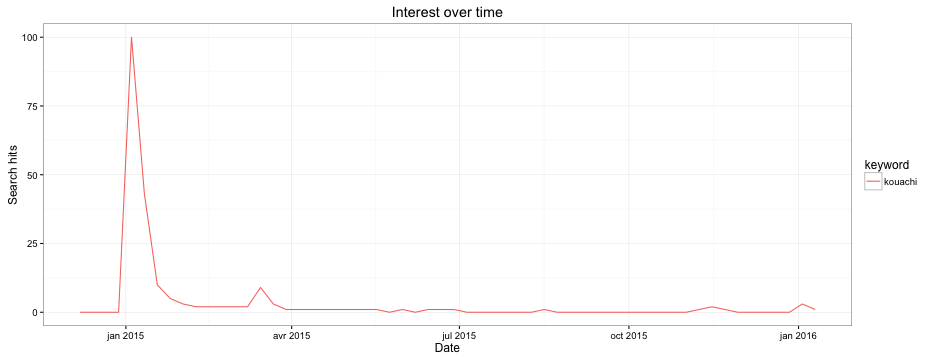
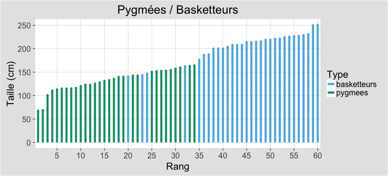
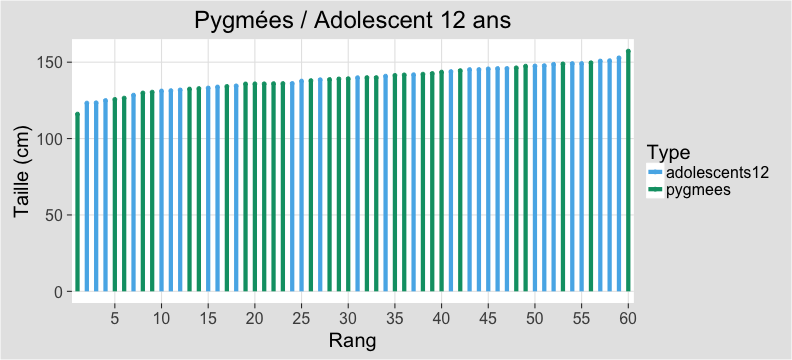

Introduction
0 - Qu'est-ce que la statistique ?
1 - Exemple d'étude contexte 1
2 -Exemple d'étude contexte 2
Interdisciplinarité : voir la connaissance et la recherche comme un réseau
Open source, numérique.
Internet


| Jour | Search hits : kouachi |
|---|---|
| 2015-01-09 | 100 |
| 2015-01-08 | 60 |
| 2015-01-10 | 42 |
| 2015-01-11 | 27 |
| 2015-01-12 | 17 |
| 2015-01-07 | 16 |
| 2015-01-13 | 15 |
| 2015-01-14 | 13 |
| 2015-01-17 | 10 |
| 2015-01-15 | 9 |
| Recherches frÈquentes | hits : kouachi |
|---|---|
| freres kouachi | 100 |
| kouachi cherif | 80 |
| cherif | 80 |
| said kouachi | 75 |
| said | 75 |
| frere kouachi | 60 |
| les freres kouachi | 45 |
| coulibaly | 40 |
| kouachi coulibaly | 40 |
| mort kouachi | 30 |
| RÈgions | hits : kouachi |
|---|---|
| Champagne-Ardenne | 100 |
| Œle-de-France | 87 |
| Picardie | 85 |
| Nord-Pas-de-Calais | 70 |
| Franche-ComtÈ | 63 |
| Lorraine | 61 |
| Auvergne | 60 |
| Centre | 60 |
| Bourgogne | 59 |
| Haute-Normandie | 57 |
Dans tous les domaines actuels ou presque cela demeure un outil
- politique (démographie, chômage, csp, inégalités)
- Sciences / biologie (analyse de séquence ADN, comparaison)
- économie (assurance, séries temporelles, prédire)
- l'histoire
- marketing (web : clic cookie- problème des robots cliqueurs)
- journalisme (sondage, communication)
- industrie (fiabilité, décision)
À l'université, un exemple de champ de recherche : les événement rares.
queues de distribution, valeurs extrêmes, tsunami, marché financier, accident nucléaire).
C'est dans ce contexte que les statistiques restent les plus connectées aux probabilités.
Deux statisticiens :
- 1- L'utilisateur d'un outil dans l'objectif d'un résultat
- 2- Un chercheur (il étudie méthodes et modèles)
Ambivalence :
- 1- le besoin de décrire et de décider en pratique : les outils statistiques
- 2- la construction de ces outils, la matière de ces outils étant les probabilités
Extension du domaine de la statistique Terminologie récente du marché de l'emploi
- Statisticien
- Statisticien appliqué
- Data scientist
- Ingénieur statisticien
- Grandes données
{kind=link}
La statistique de nature interdisciplinaire, car elle s'articule avec
- *les probabilités
- *l'informatique
- *les domaines d'applications
D'où l'intérêt d'en discuter
- Qu'est ce qu'une fréquence ?
- Degré de confiance : subjectivite
- Degré de réalisation : objectiviste / fréquentiste
- Relations croisées entre stats et probas
- Application d'un modèle probabiliste à un cas particulier : statistique
- Formulation Bayésienne :
- A priori la donnée / a posteriori la fréquence
- Passage à la limite de la fréquence pour en faire une probabilité
- Moyenne,...
- “Faire des choses qui tiennent” (A. Desrosières)
- Ce que l’on cherche : définir pour chaque problème une méthode qui est reproductible (K. Popper)
- Recueil : Constituer la Base De Données
- La “base” de notre étude
- Classifier : définir et entretenir des nomenclatures
- préliminaire aux notions de contingence et de modèle
Contingence : ce qui est et qui pourrait ne pas être, ou qui pourrait être différent
Modéliser : “Essentially, all models are wrong, but some are useful” (G. Box)
Modèle (d'après G. Brousseau) :
- *pertinence : représente correctement les observations
- *communicabilité : plus simple que les observations
- *fidélité : reconstitue au mieux les observations
- *intelligibilité : comprendre les observations
- *consistance : contrôle mathématique
 Wilcoxon rank sum test
data: a$value by a$variable W = 869, p-value = 5.998e-13 alternative hypothesis: true location shift is not equal to 0
 Wilcoxon rank sum test
data: a$value by a$variable W = 513, p-value = 0.3581 alternative hypothesis: true location shift is not equal to 0